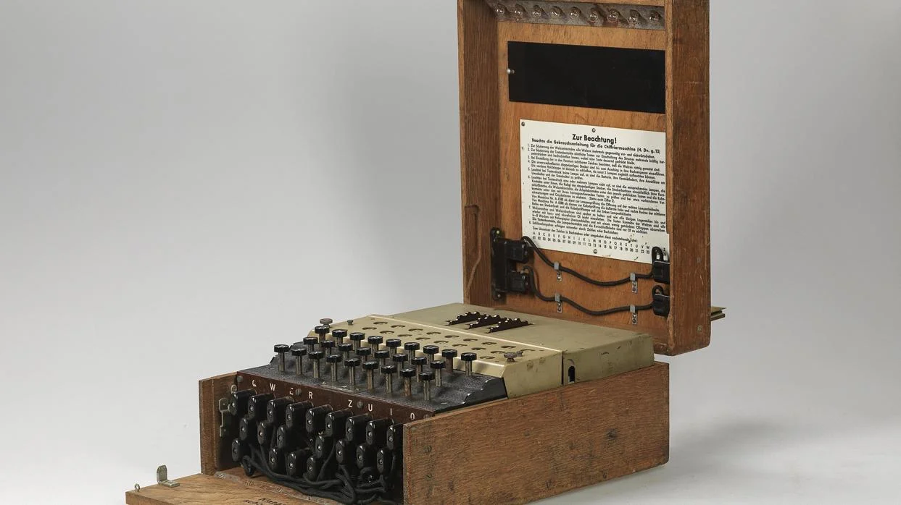

Estudiante de la Escuela Superior de Cómputo (ESCOM) - IPN
Me gusta ir a diferentes exposiciones en los Museos de la CDMX, en especial los sugeridos por el IPN.
Asisto a torneos con mi familia, donde disfrutamos del ajedrez como una forma de estrategia y conexión familiar.
Me encanta ir a ferias y festividades locales con mi hermano, donde disfrutamos de juegos clásicos y comida tradicional.
Fue usada en la Segunda Guerra Mundial por los nazis para enviar mensajes cifrados. Su descifrado fue clave para ganar la guerra.
El algoritmo RSA se basa en la dificultad de factorizar números primos grandes, lo que lo hace muy seguro para el cifrado actual.
Una nueva rama que promete comunicaciones ultra seguras utilizando principios de la física cuántica.